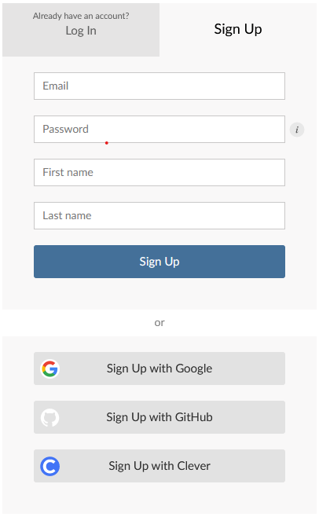

Strengthen & Deploy
Learning outcomes - Debug Shiny apps and understand them from the inside - Supervise and test Shiny apps for robustness (appendix) - Convert simple Shiny apps to static website using shinylive - Deploy any Shiny app to the web using shinyapps.io
1 Deploying Shiny apps
- When running a Shiny app using
runApp(), you host it on a local server, i.e. it remains in your local network - Deploying a Shiny app means making your app available to other users!
- Deployment is the last step of app development
1.1 Strengthen
- Before it’s time to deploy, it’s a good idea to make sure your app passes the test of publicity
- Depending on the use case and target group, a deployed app should be:
- fast: remote communication can make your app slower than on a local host
- scalable: a high workload can crash your app
- stable: errors also crash your app
1.2 Tools to strengthen
- There are a lot of Shiny extensions that help in strengthening a Shiny app, some of which we will address:
profvis: Profiles a Shiny app and creates performance visualizationsreactlog: Logs reactivity of your Shiny app and creates a dynamic reactive graphshinyloadtest: Simulates a workload of users and determines how well your app is suitable for such a workloadshinytest: Creates snapshots and compares the visual appearance of them in subsequent runsshiny::testServer(): Performs programmatic tests using the Shiny server logic of an app
1.3 Further resources
2 Performance profiling
- Profiling means recording how much time and memory certain actions in your Shiny app need
- Useful for testing performance or speed of your app
- Performance profiling in Shiny can be done with the
profvispackage
2.1 Using the profvis package
- Simply run your app within a
profvis::profvis()call:
Note
It is necessary to use runApp(), shinyApp() does not suffice!
- Then, perform some tasks in the Shiny app
- Close the app, and an HTML file will open that looks something like below:
3 Debugging Shiny apps
- Debugging Shiny apps is a unique challenge as Shiny code is not linear like regular R code
- Setting breakpoints is tricky and only supported in RStudio
- Here, we introduce three ways to debug a Shiny app:
- Interactive debugging
- Print debugging aka logging
- Reactivity logging
3.1 Interactive debugging
- Interactive debugging comes from base R and works just like that
- Put a call to
browser()somewhere in your server function - Code execution is interrupted on the spot and you can explore the server function in a “frozen” state

input in Shiny browser call3.2 Logging
- In base R, print debugging is frowned upon
- In Shiny, print debugging can be a nice way to understand errors along a reactivity path (or to understand reactivity in general)
3.3 Where am I?
- That is a question you might ask yourself occasionally when encountering errors in Shiny
- The
whereamipackage can tell you exactly where you are - Many R packages enable general logging (
logging,logger,log4r), butwhereamiis especially suitable for Shiny
logger
whereami3.4 Reactivity logging
- Reactivity logging means capturing and visualizing reactive dependencies in Shiny apps
- Useful for detecting overreactiveness and reactive instabilities
- Reactivity logging can be done using the
reactlogpackage
3.4.1 Using the reactlog package
Run
reactlog::reactlog_enable()before running the Shiny app or setoptions(shiny.reactlog = TRUE)Do stuff in your Shiny app (particularly something that triggers dependencies!)
Run
shiny::reactlogShow()orreactlog::reactlog_show()after closing the appAlternatively, press
Strg + F3while the app is running
4 Deployment
- The deployment of Shiny apps is restricted to servers that support Shiny apps
- You can either set up a custom Shiny server or use a server provider
4.1 Where to deploy
| Name | Use | Requirements |
|---|---|---|
| shinyapps.io | Casual to professional applications | rsconnect R package |
| Posit Connect | Professional to corporate applications | rsconnect R package |
| Shiny Server | Setting up self-hosted Shiny servers | Shiny Server on a Linux server |
| ShinyProxy / Heroku | Deployment of containerized applications | Docker |
4.2 shinyapps.io
- A common choice for more casual Shiny apps is shinyapps.io
- It requires not much technical knowledge to deploy
- It does not require a pre-existing infrastructure (e.g., a server)
- It offers a free plan
4.3 rsconnect
- Both for Posit Connect and shinyapps.io you need the
rsconnectpackage rsconnectenables the communication between the Posit services and R
rsconnectis built around thedeployApp(),deployAPI()anddeployDoc()functions
4.4 Creating an account
- Before being able to deploy to Shinyapps, we need an account
- Accounts can be created per Email or using Google, Github or Clever

4.5 Connecting R to shinyapps.io
- Just with any interface, linking works using Tokens and Secrets
- On your shinyapps dashboard, navigate to Account -> Tokens on the sidebar
- Click on “Add Token”
- Click on “Show” next to your newly created token
- Paste the code into your console and execute

rsconnect4.6 Deploy!
- To verify that the verification process was successful we run:
- Finally, to deploy an app, we simply run
deployApp()to deploy anapp.Rin the current working directory to shinyapps.io: